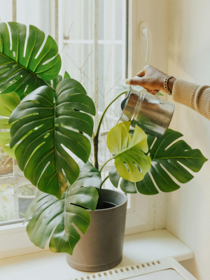
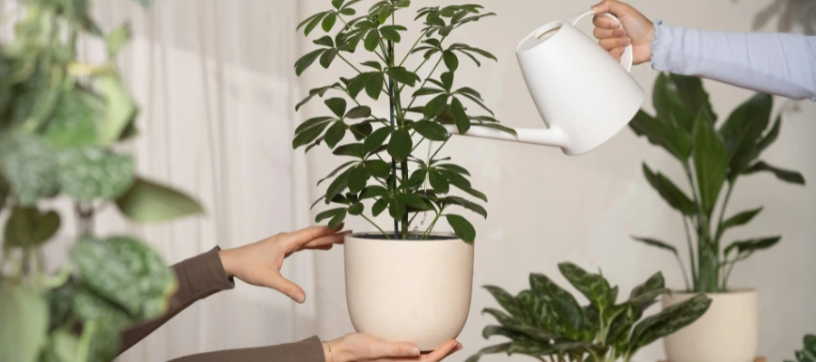
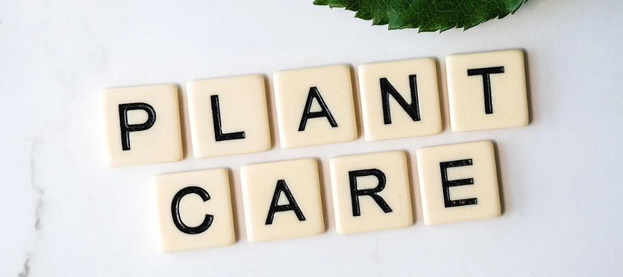

How Often Should You Water Houseplants in Winter?
30 January 2026
A Guide for Low-Light Apartments & Northern Homes
Winter plant care can feel confusing - especially in apartments with limited natural light. Shorter days, weaker sunlight, and dry indoor air all change how houseplants grow and how they use water. Even plants that thrive the rest of the year can slow down during winter, which often makes watering feel less straightforward.
If you’re wondering how often to water houseplants in winter - the answer is usually: less than you think.
Most houseplants need more time between waterings during this season, and giving them a little space to dry out is often the healthiest choice.
Why Houseplants Need Less Water in Winter
In winter, most houseplants slow their growth significantly. This effect is even stronger in apartments where natural light is limited and temperatures stay consistent indoors.
In lower light, plants produce less energy through photosynthesis, which means they simply don’t need as much water to support new growth. Instead of pushing out new leaves, most plants focus on maintaining what they already have. Less growth means less water uptake — and more time for soil to dry out naturally.
That means:
- Water is absorbed at a slower pace.
- Soil stays wet longer.
- Roots sit in damp soil longer and become more vulnerable to rot.
Because everything is moving more slowly, watering on a summer schedule can quickly lead to overwatering. This is one of the most common winter plant care mistakes, especially in low-light places where soil takes longer to dry out.
How Often Should You Water Houseplants in Winter?
For most indoor houseplants, watering every 2–4 weeks is usually enough during winter. This can vary depending on the type of plant, the amount of natural light, and how warm your home stays — but in general, less frequent watering is safer than too much.
Instead of following a strict watering schedule, winter plant care is easier when you slow down and check in with your plant. A few simple habits make a big difference:
- Check the soil moisture before watering — the top few inches should feel dry.
- Observe your plant’s leaves and overall appearance.
- Adjust your watering based on light levels and indoor temperature.
Plants in low-light places use water more slowly than those in bright, sunny rooms. Because of this, they generally need longer breaks between waterings. Giving the soil time to dry out helps prevent root rot and keeps plants healthy through the winter months.

How to Tell When Plant Need Water
Before watering, it’s always worth checking the soil first.This small habit helps prevent overwatering and keeps roots healthy.
- Let the top 2–5 cm (1–2 inches) of soil dry out before watering.
- For deeper pots, allow the soil to dry further down, not just on the surface.
- Lift the pot — a lighter pot usually means the plant has used most of the available water.
In apartment settings, soil often dries unevenly. The top may feel dry while the bottom stays cool or damp, especially in low light. If the lower soil still feels moist, it’s better to wait a few more days.
You can check lower soil by inserting your finger, a wooden stick or chopstick deeper into the pot, or by lifting the pot to feel its weight. If the stick comes out damp or the pot still feels heavy, the soil likely doesn’t need water yet.
Learning to read the soil instead of relying on a schedule is one of the simplest ways to improve apartment plant care. Over time, this makes watering feel more intuitive and helps plants grow steadily without stress.
Common Winter Overwatering Signs
Overwatering is one of the most common mistakes we make in winter. Because growth slows and soil stays wet longer, it’s easy to give plants more water than they actually need. Watch for these early signs of overwatering:
- Yellow or pale leaves that look soft rather than dry.
- Stems that feel mushy or droop even though the soil is wet.
- Fungus gnats near the soil surface.
- Leaves falling off without drying first.
If you notice any of these signs, pause watering right away and allow the soil to dry out more than usual. Giving the roots extra air and time to recover is often enough to help the plant bounce back. In winter, waiting a little longer between waterings is usually the safer choice.

Do Apartment Plants Need Fertilizer in Winter?
In most cases, no.
Low light levels mean plants aren’t actively growing or producing new leaves. Without that growth, they can’t use extra nutrients efficiently. Adding fertilizer during this time can actually stress the roots and lead to salt buildup in the soil, which may cause leaf damage or slow recovery.
Winter is a good time to let plants rest and focus on maintaining healthy roots rather than pushing new growth. Skipping fertilizer during this season helps keep plant care simple and avoids unnecessary problems.
You can resume feeding in spring, once daylight increases and you start to see fresh growth. That’s when plants are ready to use nutrients again and benefit from regular feeding.
Winter Care Tips for Low-Light Apartments
Instead of watering more, focus on creating better conditions:
- Move plants closer to windows to maximize available daylight, but avoid pressing them directly against cold glass. A small gap helps protect leaves from temperature swings.
- Keep plants away from drafts, heaters, and radiators. Sudden temperature changes can stress plants just as much as overwatering.
- Rotate plants occasionally so all sides receive light evenly. This helps prevent leaning and encourages balanced growth.
- Accept slower growth — it’s completely normal. Fewer new leaves doesn’t mean something is wrong; it’s part of the seasonal cycle.
- Humidity often matters more than watering during winter months. Dry indoor air can affect leaves and soil faster than a lack of water. Grouping plants together or using a simple humidifier can help create a more comfortable environment.
Winter plant care is about doing less and working with the season. Once the conditions are right, plants tend to settle in and take care of the rest.
Final Thoughts
Winter plant care is about doing less — not more.
By watering less often, taking time to observe your plants, and responding to what you actually see, you can keep houseplants healthy through winter — even in low-light apartments. Small adjustments, like letting soil dry a little longer or moving a plant closer to a window, usually go further than sticking to a strict routine.
If you’re just starting out, choosing easy low-maintenance houseplants makes winter care far simpler. Plants that naturally tolerate low light and irregular watering are more forgiving and help build confidence over time. With the right plants and a slower approach, winter plant care can feel calm, manageable, and even enjoyable.